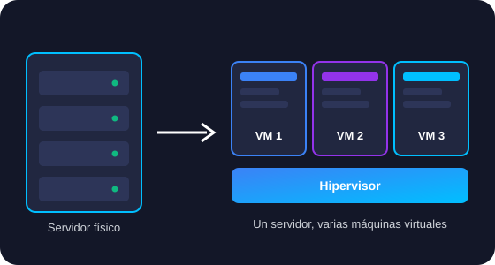

Qué es la computación en la nube
Una forma de usar tecnología como un servicio: sin comprar servidores, con capacidad que crece contigo y un cobro basado en el uso.

Una definición sencilla
La computación en la nube (cloud computing) es la entrega a petición de recursos de TI (como lo son los servidores, almacenamiento, bases de datos, redes, software) a través de Internet con un modelo de pago por uso(se paga por lo que se usa). En lugar de comprar, poseer y mantener centros de datos físicos, accedes a esos servicios cuando los necesitas, tal como lo describe el Instituto Nacional de Estándares y Tecnología de EE. UU. (NIST).
Nube no es lo mismo que Internet. Internet es la red que conecta los dispositivos; la nube son los servicios y la infraestructura que se ofrecen a través de esa red.
Las cinco características esenciales
El NIST define cinco propiedades que debe tener un servicio para considerarse "nube".
Autoservicio bajo demanda
Tú mismo creas y eliminas recursos desde un panel o una API, sin llamar a nadie.
Amplio acceso a la red
Los servicios están disponibles por Internet desde computadoras, teléfonos y tabletas.
Agrupación de recursos
El proveedor reparte la misma infraestructura entre muchos clientes de forma aislada (multiusuario).
Elasticidad rápida
Los recursos crecen o se reducen en segundos o minutos para seguir la demanda real.
Servicio medido
El consumo se mide y se factura por uso, con informes transparentes de costos.
¿Cómo funciona por dentro?
Cuatro piezas hacen posible que alquiles tecnología como si fuera un servicio público.

Centros de datos
Miles de servidores en edificios con energía y refrigeración redundantes, repartidos en regiones y zonas de disponibilidad.
Virtualización
Un hipervisor divide cada servidor físico en máquinas virtuales aisladas que se asignan a distintos clientes.
Automatización y API
Un panel web o una API crean recursos en minutos, sin intervención humana del lado del proveedor.
Medición y cobro
Cada hora de cómputo y cada gigabyte se registran y se facturan según el consumo.
Una breve historia
- 1961
La idea de la computación como servicio
John McCarthy plantea que la computación podría organizarse algún día como un servicio público, igual que la electricidad.
- 1999
Software por Internet
Salesforce ofrece una aplicación empresarial totalmente a través del navegador: uno de los primeros SaaS.
- 2006
Nace la nube moderna
Amazon lanza S3 y EC2: almacenamiento y servidores virtuales que se alquilan por horas.
- 2008
Llegan las plataformas
Google presenta App Engine para ejecutar aplicaciones sin administrar servidores, y Microsoft anuncia Azure.
- 2010
Azure disponible
Microsoft Azure queda disponible comercialmente y la competencia entre proveedores se acelera.
- 2014
Serverless
AWS presenta Lambda y populariza las funciones que se ejecutan solo cuando ocurre un evento.
- Hoy
Contenedores, IA y multi-cloud
Las empresas combinan varios proveedores y usan la nube para entrenar modelos de inteligencia artificial.
Ventajas y desventajas
Como toda tecnología, la nube tiene compromisos que conviene conocer antes de decidir.
Ventajas
- Pagas solo lo que usas.
- Escalas en minutos, no en meses.
- Accedes desde cualquier lugar con Internet.
- El proveedor mantiene y actualiza la infraestructura.
- Recuperarte de un desastre es más sencillo.
Desventajas
- Dependes de tu conexión a Internet.
- Riesgo de quedar atado a un solo proveedor.
- Los costos pueden crecer si no se monitorean.
- La seguridad es una responsabilidad compartida.
- Menos control sobre la infraestructura física.